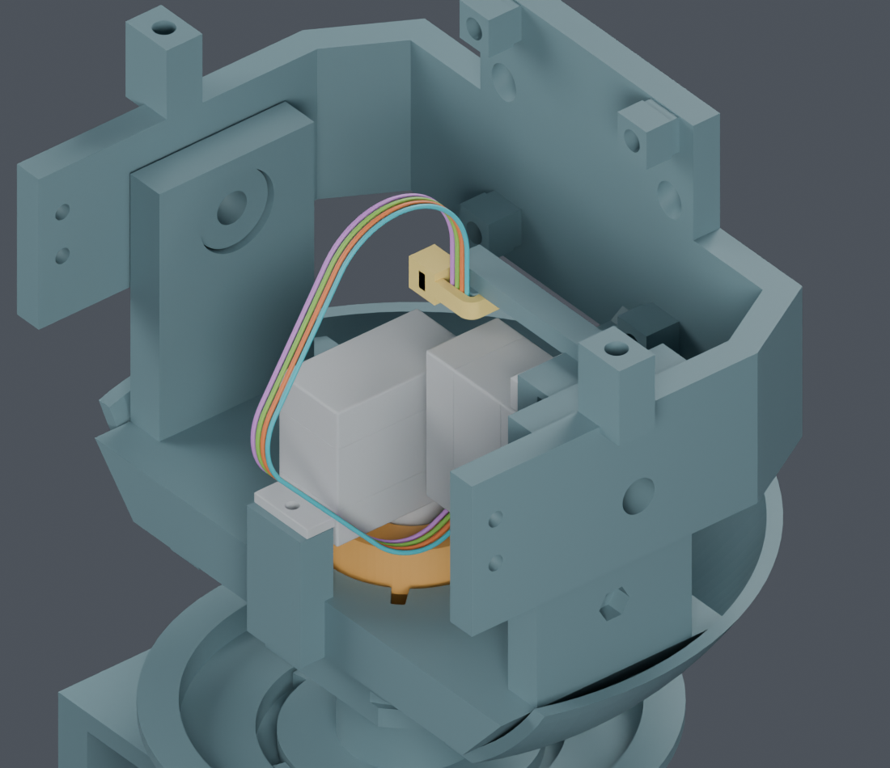
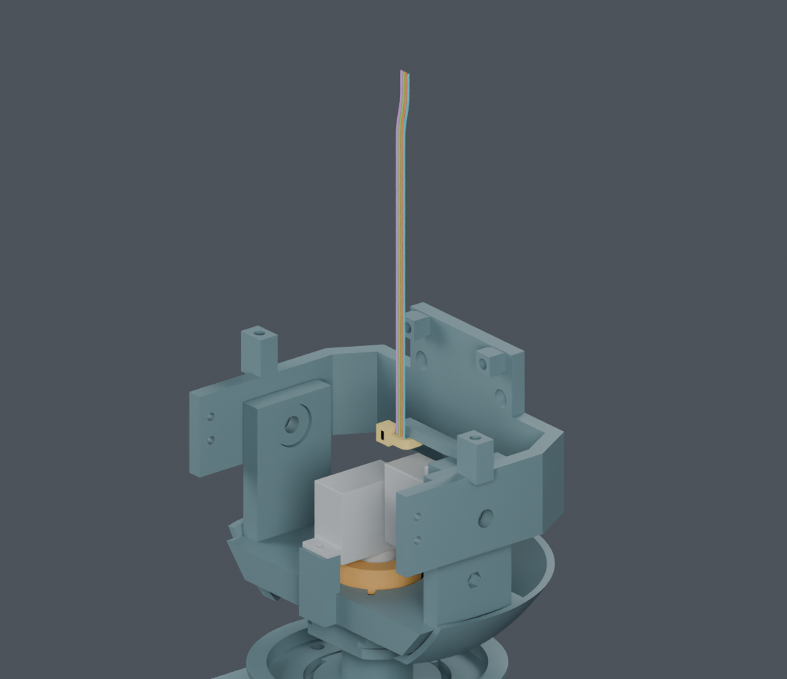

独立候选，主模型M1.47未改。CAM板插合、下落时的连续线对结构件、线间和自接近检查通过。先穿线再形成线环的完整工序还未通过，尚不能提供下料图。
| 已完成 | 证据范围 |
|---|---|
| 插合与落座，各6mm | 连续线对实体：128个带位移界限的区间；连续线间：14组包围/固定检查、解析分离界限及8个参数区间。 |
| 线径、长度和间隙 | 最大单线外径0.6604mm不变；各根总长度不变；保留0.3mm名义间隙，线间下界约0.306mm。 |
| 证据边界 | 规定线形的几何检查，不是实际线材变形、插合力、动态寿命或全部11根活动导线的装配认证。 |
JST目录端子包络已加入；1480个区间已证，31个末段区间未通过。原路线完整覆盖未完成，不能沿用41位置初筛作通过结论。新路线已从负侧绕开相交位置，四线规定成形动作与步骤衔接连续通过；板卡8→2mm下降也已通过。完整穿线和端子入壳仍需完成，见当前结果。查看新结果和局部图

临时增加上方直段、等量缩短回程直段，保持总长；最终恢复原线路。没有给反力件开孔，也没有加打印件。CAM板、显示支架和头壳在这一步尚未安装，CAM扎带暂不收紧。

颈部穿线到此初态、带实际端子的连续成形、CAM扎带穿入/收紧/剪尾，以及其余头部线路和排线。四枚M2×5内六角螺钉仍待确认。全部闭合后再整理分支及裁线尺寸。
完整装配说明 · 连续线间结果 · 连续对实体结果 · 41位置候选 · 原路线碰撞证据 · 独立Blender · 实际命令 · 交付记录